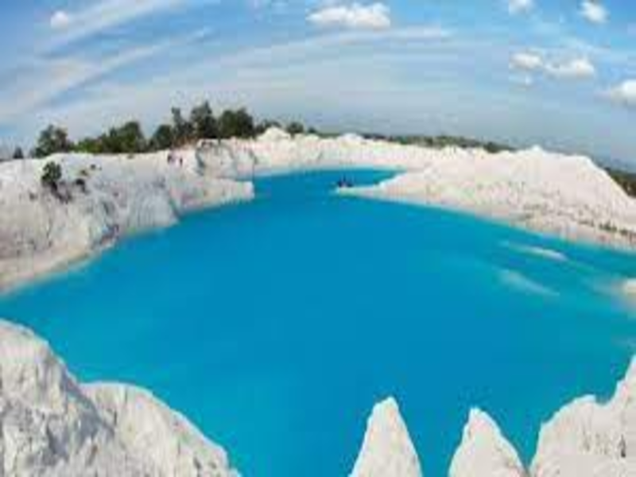

Pesona Danau Kaolin di Bangka Belitung, Biru Menawan Bekas Pertambangan
Sejauh mata memandang wisatawan takjub akan keindahan danau jernih membiru. Danau Kaolin, sebuah danau dengan penampakan unik. Airnya biru meluas dikelilingi dengan bebatuan berwarna putih. Lokasinya berada di Jl. Raya Gadung, Desa Nibung, Koba, Kabupaten Bangka Tengah, Kepulauan Bangka Belitung. Saking jernihnya, air danau bak cermin yang memantulkan panorama langit dan bebatuan. Di balik keindahannya, Danau Kaolin terbentuk tidak secara alami. Sesuai dengan namanya Danau Kaolin dulu penuh dengan Kaolin, sejenis mineral yang terkandung dalam tanah. Keberadaan Kaolin menjadi saksi bisu kekayaan pertambangan di Kepulauan Bangka Belitung.
Indahnya Air terjun Simuturu
Menjadi salah satu daya tarik wisata di Danau Toba, air terjun ini memang berbeda dengan air terjun pada umumnya. Keunikan air terjun setinggi kurang lebih 70 meter dengan 7 tingkatan ini adalah karena aliran airnya jatuh ke Danau Toba. Suasana magis terasa ketika memandangnya dari dekat, di mana air jatuh bertingkat-tingkat dari celah tebing menembus hijaunya pepohonan di sekitar.

Keindahan Danau Kaolin
Swafoto berlatar danau biru ini ternyata memberikan kesan yang khas. Seolah berada di tempat asing, keindahannya akan membuatmu betah berlama-lama. Kamu juga harus waspada, tanah di pinggir danau tak semuanya bisa dipijak. Sebagian tanahnya labil, apalagi saat musim penghujan.
Jangan khawatir, pagar pembatas telah disediakan agar wisatawan tak mendekati area rawan. Tunggu apa lagi, segera siapkan kamera dan ambil gambar sebanyak-banyaknya.
Muda-mudi, hingga wisata keluarga hilir mudik memandangi Danau Kaolin. Bahkan banyak pasangan yang memanfaatkannya sebagai spot foto prewedding yang mengagumkan. Aneka foto berlatar Danau Biru Kaolin yang tersebar di jagat maya ternyata membuat spot wisata ini menyedot wisata berdatangan.